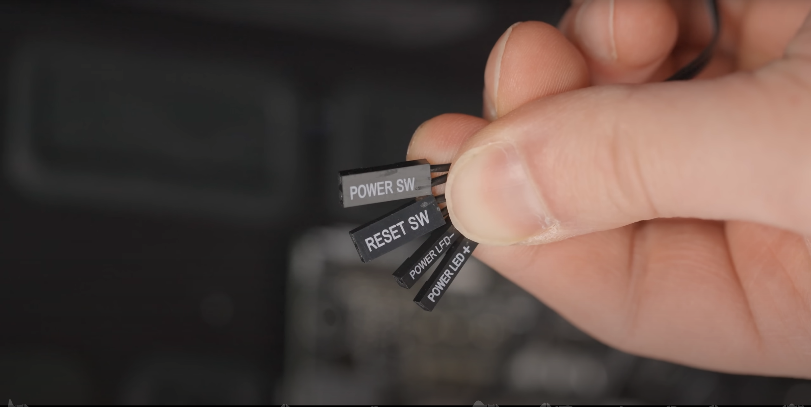

• Cable management is very important. It is the best way to ensure that the computer system is free of dust and grime. It also allows for easy installation of future components.
• Many of the instructions inluded in this list of instructions can be found within the user’s manual for each component. The Graphics Card, motherboard, processor, and SSD or Hard Disc Drive will all include instruction sheets with pictures and diagrams to assist in assembly.
• Sometimes a little force is required to make sure that a part is seated correctly. However, too much force can absolutely break a part. Computer parks are very expensive.
• When installing connectors to headers, especially those for the power button on the case, it is important to remember charge polarity. Just like a car battery, there will be positive and negative wires. They will be labeled with a plus and minus on the lead as well as on the header side. Make sure that these are matched up properly. If they are not, bad things happen; not really, but certain parts of the system will not work properly. For example, the LED light that goes around the power switch of the case will not work if these leads are mis-matched.
• All of the images that were used in this instruction list were sourced from the same video. That video is a full, in-depth computer building guide that covers everything that anybody would need to know about building a computer system. Here is the link to that video: https://youtu.be/BL4DCEp7blY. I highly recommend watching it.